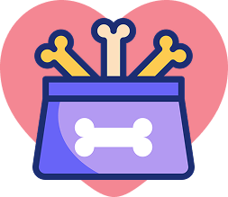
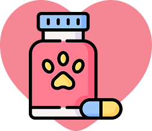

Давайте творить добро вместе!

Присоединяйтесь к благотворительному проекту «Открытка добра» и дарите добро вместе с нами.
«Открытка добра» – это благотворительный проект сети зоомагазинов ZooTech, цель которого - помощь четвероногим подопечным приютов и фондов.
Принять участие в проекте может каждый – просто совершите покупку открытки в любом количестве и в любом магазине ZooTech!
100% средств от продажи «Открытки добра» (стоимость одной открытки составляет 1 рубль), будут переданы благотворительному объединению «ЗООшанс», а также фонду ByPet, на покупку кормов и ветеринарных препаратов для их четвероногих подопечных.
О партнерах проекта
Благотворительное объединение «ЗООшанс» помогает бездомным животным, оказывает медицинскую помощь и осуществляет передачу животных новым хозяевам. Подробнее об объединении можно узнать на сайте zooshans.by
ByPet – информационная платформа, где волонтеры могут размещать животных, которые ищут дом, а также искать доноров для своих подопечных в sos ситуациях и передержки. Подробнее о платформе можно узнать на bypet.by
-
Собрано 1134 кг корма
-

Собрано 729 кг лакомств
-

Собрано 1243 кг наполнителей
-

Собрано 300 уп. ветпрепаратов
-
6 питомцев нашли свой дом